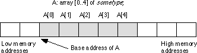
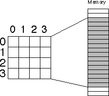
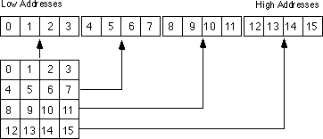
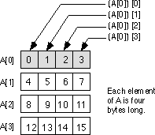
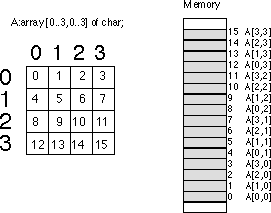

|
Table of Content | Chapter Five (Part 3) |
|
Table of Content | Chapter Five (Part 3) |
Composite data types are those that are built up from other (generally scalar) data types. An array is a good example of a composite data type - it is an aggregate of elements all the same type. Note that a composite data type need not be composed of scalar data types, there are arrays of arrays for example, but ultimately you can decompose a composite data type into some primitive, scalar, types.
This section will cover two of the more common composite data types: arrays and records. It's a little premature to discuss some of the more advanced composite data types.
Arrays are probably the most commonly used composite data type. Yet most beginning programmers have a very weak understanding of how arrays operate and their associated efficiency trade-offs. It's surprising how many novice (and even advanced!) programmers view arrays from a completely different perspective once they learn how to deal with arrays at the machine level.
Abstractly, an array is an aggregate data type whose
members (elements) are all the same type. Selection of a member from the array is by an
integer index. Different indices select unique elements of the array. This text assumes
that the integer indices are contiguous (though it is by no means required). That is, if
the number x is a valid index into the array and y is also a valid index,
with x < y, then all i such that x < i < y are valid indices into
the array.
Whenever you apply the indexing operator to an array, the
result is the specific array element chosen by that index. For example, A[i] chooses
the ith element from array A. Note that there is no
formal requirement that element i be anywhere near element i+1
in memory. As long as A[i] always refers to the same memory location and A[i+1]
always refers to its corresponding location (and the two are different), the definition of
an array is satisfied.
In this text, arrays occupy contiguous locations in memory. An array with five elements will appear in memory as shown below:

The base address of an array is the address of the first element on the array and always appears in the lowest memory location. The second array element directly follows the first in memory, the third element follows the second, etc. Note that there is no requirement that the indices start at zero. They may start with any number as long as they are contiguous. However, for the purposes of discussion, it's easier to discuss accessing array elements if the first index is zero. This text generally begins most arrays at index zero unless there is a good reason to do otherwise. However, this is for consistency only. There is no efficiency benefit one way or another to starting the array index at some value other than zero.
To access an element of an array, you need a function that converts an array index into the address of the indexed element. For a single dimension array, this function is very simple. It is
Element_Address = Base_Address + ((Index - Initial_Index) * Element_Size)
where Initial_Index is the value of the first
index in the array (which you can ignore if zero) and the value Element_Size
is the size, in bytes, of an individual element of the array.
5.6.1.1 Declaring Arrays in Your Data Segment
Before you access elements of an array, you need to set aside storage for that array. Fortunately, array declarations build on the declarations you've seen so far. To allocate n elements in an array, you would use a declaration like the following:
arrayname basetype n dup (?)
Arrayname is the name of the array variable and basetype is the type of an element of that array. This sets aside storage for the array. To obtain the base address of the array, just use arrayname.
The n dup (?) operand tells the assembler to
duplicate the object inside the parentheses n times. Since a question mark appears inside
the parentheses, the definition above would create n occurrences of an uninitialized
value. Now let's look at some specific examples:
CharArray char 128 dup (?) ;array[0..127] of char IntArray integer 8 dup (?) ;array[0..7] of integer BytArray byte 10 dup (?) ;array[0..9] of byte PtrArray dword 4 dup (?) ;array[0..3] of dword
The first two examples, of course, assume that you've used
the typedef statement to define the char and integer
data types.
These examples all allocate storage for uninitialized arrays. You may also specify that the elements of the arrays be initialized to a single value using declarations like the following:
RealArray real4 8 dup (1.0) IntegerAry integer 8 dup (1)
These definitions both create arrays with eight elements. The first definition initializes each four-byte real value to 1.0, the second declaration initializes each integer element to one.
This initialization mechanism is fine if you want each element of the array to have the same value. What if you want to initialize each element of the array with a (possibly) different value? Well, that is easily handled as well. The variable declaration statements you've seen thus far offer yet another initialization form:
name type value1, value2, value3, ..., valuen
This form allocates n variables of type type. It initializes the first item to value1, the second item to value2, etc. So by simply enumerating each value in the operand field, you can create an array with the desired initial values. In the following integer array, for example, each element contains the square of its index:
Squares integer 0, 1, 4, 9, 16, 25, 36, 49, 64, 81, 100
If your array has more elements than will fit on one line, there are several ways to continue the array onto the next line. The most straight-forward method is to use another integer statement but without a label:
Squares integer 0, 1, 4, 9, 16, 25, 36, 49, 64, 81, 100
integer 121, 144, 169, 196, 225, 256, 289, 324
integer 361, 400
Another option, that is better in some circumstances, is to use a backslash at the end of each line to tell MASM 6.x to continue reading data on the next line:
Squares integer 0, 1, 4, 9, 16, 25, 36, 49, 64, 81, 100, \
121, 144, 169, 196, 225, 256, 289, 324, \
361, 400
Of course, if your array has several thousand elements in it, typing them all in will not be very much fun. Most arrays initialized this way have no more than a couple hundred entries, and generally far less than 100.
You need to learn about one final technique for initializing single dimension arrays before moving on. Consider the following declaration:
BigArray word 256 dup (0,1,2,3)
This array has 1024 elements, not 256. The n dup
(xxxx) operand tells MASM to duplicate xxxx n times, not create an
array with n elements. If xxxx consists of a single item, then the dup
operator will create an n element array. However, if xxxx contains two items
separated by a comma, the dup operator will create an array with 2*n
elements. If xxxx contains three items separated by commas, the dup
operator creates an array with 3*n items, and so on. Since there are four items in the
parentheses above, the dup operator creates 256*4 or 1024 items in the array.
The values in the array will initially be 0 1 2 3 0 1 2 3 0 1 2 3 0 1 2 3 ...
You will see some more possibilities with the dup
operator when looking at multidimensional arrays a little later.
5.6.1.2 Accessing Elements of a Single Dimension Array
To access an element of a zero-based array, you can use the simplified formula:
Element_Address = Base_Address + index * Element_Size
For the Base_Address entry you can use the
name of the array (since MASM associates the address of the first operand with the label).
The Element_Size entry is the number of bytes for each array element. If the
object is an array of bytes, the Element_Size field is one (resulting in a
very simple computation). If each element of the array is a word (or integer, or other
two-byte type) then Element_Size is two. And so on. To access an element of
the Squares array in the previous section, you'd use the formula:
Element_Address = Squares + index*2
The 80x86 code equivalent to the statement AX:=Squares[index]
is
mov bx, index
add bx, bx ;Sneaky way to compute 2*bx
mov ax, Squares [bx]
There are two important things to notice here. First of
all, this code uses the add instruction rather than the mul
instruction to compute 2*index. The main reason for choosing add is that it
was more convenient (remember, mul doesn't work with constants and it only
operates on the ax register). It turns out that add is a lot
faster than mul on many processors, but since you probably didn't know that,
it wasn't an overriding consideration in the choice of this instruction.
The second thing to note about this instruction sequence is
that it does not explicitly compute the sum of the base address plus the index times two.
Instead, it relies on the indexed addressing mode to implicitly compute this sum. The
instruction mov ax, Squares[bx] loads ax from location Squares+bx
which is the base address plus index*2 (since bx contains index*2).
Sure, you could have used
lea ax, Squares
add bx, ax
mov ax, [bx]
in place of the last instruction, but why use three instructions where one will do the same job? This is a good example of why you should know your addressing modes inside and out. Choosing the proper addressing mode can reduce the size of your program, thereby speeding it up.
The indexed addressing mode on the 80x86 is a natural for accessing elements of a single dimension array. Indeed, it's syntax even suggests an array access. The only thing to keep in mind is that you must remember to multiply the index by the size of an element. Failure to do so will produce incorrect results.
If you are using an 80386 or later, you can take advantage of the scaled indexed addressing mode to speed up accessing an array element even more. Consider the following statements:
mov ebx, index ;Assume a 32 bit value.
mov ax, Squares [ebx*2]
This brings the instruction count down to two instructions. You'll soon see that two instructions aren't necessarily faster than three instructions, but hopefully you get the idea. Knowing your addressing modes can surely help.
Before moving on to multidimensional arrays, a couple of
additional points about addressing modes and arrays are in order. The above sequences work
great if you only access a single element from the Squares array. However, if
you access several different elements from the array within a short section of code, and
you can afford to dedicate another register to the operation, you can certainly shorten
your code and, perhaps, speed it up as well. The mov ax,Squares[BX] instruction
is four bytes long (assuming you need a two-byte displacement to hold the offset to Squares
in the data segment). You can reduce this to a two byte instruction by using the
base/indexed addressing mode as follows:
lea bx, Squares
mov si, index
add si, si
mov ax, [bx][si]
Now bx contains the base address and si
contains the index*2 value. Of course, this just replaced a single four-byte instruction
with a three-byte and a two-byte instruction, hardly a good trade-off. However, you do not
have to reload bx with the base address of Squares for the next
access. The following sequence is one byte shorter than the comparable sequence that
doesn't load the base address into bx:
lea bx, Squares
mov si, index
add si, si
mov ax, [bx][si]
.
. ;Assumption: BX is left alone
. ; through this code.
mov si, index2
add si, si
mov cx, [bx][si]
Of course the more accesses to Squares you
make without reloading bx, the greater your savings will be. Tricky little
code sequences such as this one sometimes pay off handsomely. However, the savings depend
entirely on which processor you're using. Code sequences that run faster on an 8086 might
actually run slower on an 80486 (and vice versa). Unfortunately, if speed is what you're
after there are no hard and fast rules. In fact, it is very difficult to predict the speed
of most instructions on the simple 8086, even more so on processors like the 80486 and
Pentium/80586 that offer pipelining, on-chip caches, and even superscalar operation.
The 80x86 hardware can easily handle single dimension arrays. Unfortunately, there is no magic addressing mode that lets you easily access elements of multidimensional arrays. That's going to take some work and lots of instructions.
Before discussing how to declare or access multidimensional arrays, it would be a good idea to figure out how to implement them in memory. The first problem is to figure out how to store a multi-dimensional object into a one-dimensional memory space.
Consider for a moment a Pascal array of the form A:array[0..3,0..3]
of char. This array contains 16 bytes organized as four rows of four characters.
Somehow you've got to draw a correspondence with each of the 16 bytes in this array and 16
contiguous bytes in main memory. The figure below shows one way to do this.

The actual mapping is not important as long as two things occur: (1) each element maps to a unique memory location (that is, no two entries in the array occupy the same memory locations) and (2) the mapping is consistent. That is, a given element in the array always maps to the same memory location. So what you really need is a function with two input parameters (row and column) that produces an offset into a linear array of sixteen bytes.
Now any function that satisfies the above constraints will work fine. Indeed, you could randomly choose a mapping as long as it was unique. However, what you really want is a mapping that is efficient to compute at run time and works for any size array (not just 4x4 or even limited to two dimensions). While there are a large number of possible functions that fit this bill, there are two functions in particular that most programmers and most high level languages use: row major ordering and column major ordering.
Row major ordering assigns successive elements, moving across the rows and then down the columns, to successive memory locations. The mapping is best describedby the diagram:
Row major ordering is the method employed by most high level programming languages including Pascal, C, Ada, Modula-2, etc. It is very easy to implement and easy to use in machine language (especially within a debugger such as CodeView). The conversion from a two-dimensional structure to a linear array is very intuitive. You start with the first row (row number zero) and then concatenate the second row to its end. You then concatenate the third row to the end of the list, then the fourth row, etc:

For those who like to think in terms of program code, the following nested Pascal loop also demonstrates how row major ordering works:
index := 0;
for colindex := 0 to 3 do
for rowindex := 0 to 3 do
begin
memory [index] := rowmajor [colindex][rowindex];
index := index + 1;
end;
The important thing to note from this code, that applies across the board to row major order no matter how many dimensions it has, is that the rightmost index increases the fastest. That is, as you allocate successive memory locations you increment the rightmost index until you reach the end of the current row. Upon reaching the end, you reset the index back to the beginning of the row and increment the next successive index by one (that is, move down to the next row.). This works equally well for any number of dimensions. The following Pascal segment demonstrates row major organization for a 4x4x4 array:
index := 0;
for depthindex := 0 to 3 do
for colindex := 0 to 3 do
for rowindex := 0 to 3 do begin
memory [index] := rowmajor [depthindex][colindex][rowindex];
index := index + 1;
end;
The actual function that converts a list of index values
into an offset doesn't involve loops or much in the way of fancy computations. Indeed,
it's a slight modification of the formula for computing the address of an element of a
single dimension array. The formula to compute the offset for a two-dimension row major
ordered array declared as A:array [0..3,0..3] of integer is
Element_Address = Base_Address + (colindex * row_size + rowindex) * Element_Size
As usual, Base_Address is the address of the
first element of the array (A[0][0] in this case) and Element_Size
is the size of an individual element of the array, in bytes. Colindex is the
leftmost index, rowindex is the rightmost index into the array. Row_size
is the number of elements in one row of the array (four, in this case, since each row has
four elements). Assuming Element_Size is one, This formula computes the
following offsets from the base address:
Column Index Row Index Offset into Array
0 0 0
0 1 1
0 2 2
0 3 3
1 0 4
1 1 5
1 2 6
1 3 7
2 0 8
2 1 9
2 2 10
2 3 11
3 0 12
3 1 13
3 2 14
3 3 15
For a three-dimensional array, the formula to compute the offset into memory is the following:
Address = Base + ((depthindex*col_size+colindex) * row_size + rowindex) * Element_Size
Col_size
is the number of items in a column,
row_size is the number of items in a row. In Pascal, if you've declared the array
as "A:array [i..j] [k..l] [m..n] of type;" then row_size
is equal to n-m+1 and col_size is equal to l-k+1.
For a four dimensional array, declared as "A:array
[g..h] [i..j] [k..l] [m..n] of type;" the formula for computing the address of
an array element is
Address = Base + (((LeftIndex * depth_size + depthindex)*col_size+colindex) * row_size + rowindex) * Element_Size
Depth_size is equal to i-j+1, col_size
and row_size are the same as before. LeftIndex represents
the value of the leftmost index.
By now you're probably beginning to see a pattern. There is a generic formula that will compute the offset into memory for an array with any number of dimensions, however, you'll rarely use more than four.
Another convenient way to think of row major arrays is as arrays of arrays. Consider the following single dimension array definition:
A: array [0..3] of sometype;
Assume that sometype is the type "sometype =
array [0..3] of char;".
A is a single dimension array. Its individual
elements happen to be arrays, but you can safely ignore that for the time being. The
formula to compute the address of an element of a single dimension array is
Element_Address = Base + Index * Element_Size
In this case Element_Size happens to be four
since each element of A is an array of four characters. So what does this
formula compute? It computes the base address of each row in this 4x4 array of characters:

Of course, once you compute the base address of a row, you can reapply the single dimension formula to get the address of a particular element. While this doesn't affect the computation at all, conceptually it's probably a little easier to deal with several single dimension computations rather than a complex multidimensional array element address computation.
Consider a Pascal array defined as "A:array
[0..3] [0..3] [0..3] [0..3] [0..3] of char;" You can view this five-dimension
array as a single dimension array of arrays:
type
OneD = array [0..3] of char;
TwoD = array [0..3] of OneD;
ThreeD = array [0..3] of TwoD;
FourD = array [0..3] of ThreeD;
var
A : array [0..3] of FourD;
The size of OneD is four bytes. Since TwoD
contains four OneD arrays, its size is 16 bytes. Likewise, ThreeD
is four TwoDs, so it is 64 bytes long. Finally, FourD is four ThreeDs,
so it is 256 bytes long. To compute the address of "A [b] [c] [d] [e] [f]"
you could use the following steps:
Not only is this scheme easier to deal with than the fancy formulae from above, but it is easier to compute (using a single loop) as well. Suppose you have two arrays initialized as follows
A1 = {256, 64, 16, 4, 1} and A2 = {b, c, d, e, f}
then the Pascal code to perform the element address computation becomes:
for i := 0 to 4 do base := base + A1[i] * A2[i];
Presumably base contains the base address of
the array before executing this loop. Note that you can easily extend this code to any
number of dimensions by simply initializing A1 and A2
appropriately and changing the ending value of the for loop.
As it turns out, the computational overhead for a loop like
this is too great to consider in practice. You would only use an algorithm like this if
you needed to be able to specify the number of dimensions at run time. Indeed, one of the
main reasons you won't find higher dimension arrays in assembly language is that assembly
language displays the inefficiencies associated with such access. It's easy to enter
something like "A [b,c,d,e,f]" into a Pascal program, not realizing
what the compiler is doing with the code. Assembly language programmers are not so
cavalier - they see the mess you wind up with when you use higher dimension arrays.
Indeed, good assembly language programmers try to avoid two dimension arrays and often
resort to tricks in order to access data in such an array when its use becomes absolutely
mandatory. But more on that a little later.
Column major ordering is the other function frequently used to compute the address of an array element. FORTRAN and various dialects of BASIC (e.g., Microsoft) use this method to index arrays.
In row major ordering the rightmost index increased the fastest as you moved through consecutive memory locations. In column major ordering the leftmost index increases the fastest. Pictorially, a column major ordered array is organized as shown below:

The formulae for computing the address of an array element when using column major ordering is very similar to that for row major ordering. You simply reverse the indexes and sizes in the computation:
For a two-dimension column major array:
Element_Address = Base_Address + (rowindex * col_size + colindex) * Element_Size
For a three-dimension column major array:
Address = Base + ((rowindex*col_size+colindex) * depth_size + depthindex) * Element_Size
For a four-dimension column major array:
Address = Base + (((rowindex * col_size + colindex)*depth_size+depthindex) * Left_size + Leftindex) * Element_Size
The single Pascal loop provided for row major access
remains unchanged (to access A [b] [c] [d] [e] [f]):
for i := 0 to 4 do base := base + A1[i] * A2[i];
Likewise, the initial values of the A1 array remain unchanged:
A1 = {256, 64, 16, 4, 1}
The only thing that needs to change is the initial values for the A2 array, and all you have to do here is reverse the order of the indices:
A2 = {f, e, d, c, b}
If you have an m x n array, it will have m * n elements and require m*n*Element_Size bytes of storage. To allocate storage for an array you must reserve this amount of memory. As usual, there are several different ways of accomplishing this task. This text will try to take the approach that is easiest to read and understand in your programs.
Reconsider the dup operator for reserving
storage. n dup (xxxx) replicates xxxx n times. As you saw
earlier, this dup operator allows not just one, but several items within the
parentheses and it duplicates everything inside the specified number of times. In fact,
the dup operator allows anything that you might normally expect to find in
the operand field of a byte statement including additional occurrences of the
DUP operator. Consider the following statement:
A byte 4 dup (4 dup (?))
The first dup operator repeats everything
inside the parentheses four times. Inside the parentheses the 4 DUP (?) operation
tells MASM to set aside storage for four bytes. Four copies of four bytes yields 16 bytes,
the number necessary for a 4 x 4 array. Of course, to reserve storage for this array you
could have just as easily used the statement:
A byte 16 dup (?)
Either way the assembler is going to set aside 16
contiguous bytes in memory. As far as the 80x86 is concerned, there is no difference
between these two forms. On the other hand, the former version provides a better
indication that A is a 4 x 4 array than the latter version. The latter
version looks like a single dimension array with 16 elements.
You can very easily extend this concept to arrays of higher
arity as well. The declaration for a three dimension array, A:array [0..2, 0..3,
0..4] of integer might be
A integer 3 dup (4 dup (5 dup (?)))
(of course, you will need the integer typedef word statement
in your program for this to work.)
As was the case with single dimension arrays, you may initialize every element of the array to a specific value by replacing the question mark (?) with some particular value. For example, to initialize the above array so that each element contains one you'd use the code:
A integer 3 dup (4 dup (5 dup (1)))
If you want to initialize each element of the array to a different value, you'll have to enter each value individually. If the size of a row is small enough, the best way to approach this task is to place the data for each row of an array on its own line. Consider the following 4x4 array declaration:
A integer 0,1,2,3
integer 1,0,1,1
integer 5,7,2,2
integer 0,0,7,6
Once again, the assembler doesn't care where you split the lines, but the above is much easier to identify as a 4x4 array than the following that emits the exact same data:
A integer 0,1,2,3,1,0,1,1,5,7,2,2,0,0,7,6
Of course, if you have a large array, an array with really large rows, or an array with many dimensions, there is little hope for winding up with something reasonable. That's when comments that carefully explain everything come in handy.
5.6.2.4 Accessing Multidimensional Array Elements in Assembly Language
Well, you've seen the formulae for computing the address of an array element. You've even looked at some Pascal code you could use to access elements of a multidimensional array. Now it's time to see how to access elements of those arrays using assembly language.
The mov, add, and mul
instructions make short work of the various equations that compute offsets into
multidimensional arrays. Let's consider a two dimension array first:
; Note: TwoD's row size is 16 bytes.
TwoD integer 4 dup (8 dup (?))
i integer ?
j integer ?
. .
. .
. .
; To peform the operation TwoD[i,j] := 5; you'd use the code:
mov ax, 8 ;8 elements per row
mul i
add ax, j
add ax, ax ;Multiply by element size (2)
mov bx, ax ;Put in a register we can use
mov TwoD [bx], 5
Of course, if you have an 80386 chip (or better), you could use the following code:
mov eax, 8 ;Zeros H.O. 16 bits of EAX.
mul i
add ax, j
mov TwoD[eax*2], 5
Note that this code does not require the use of a two
register addressing mode on the 80x86. Although an addressing mode like TwoD
[bx][si] looks like it should be a natural for accessing two dimensional arrays,
that isn't the purpose of this addressing mode.
Now consider a second example that uses a three dimension array:
ThreeD integer 4 dup (4 dup (4 dup (?)))
i integer ?
j integer ?
k integer ?
. .
. .
. .
; To peform the operation ThreeD[i,j,k] := 1; you'd use the code:
mov bx, 4 ;4 elements per column
mov ax, i
mul bx
add ax, j
mul bx ;4 elements per row
add ax, k
add ax, ax ;Multiply by element size (2)
mov bx, ax ;Put in a register we can use
mov ThreeD [bx], 1
Of course, if you have an 80386 or better processor, this can be improved somewhat by using the following code:
mov ebx, 4
mov eax, ebx
mul i
add ax, j
mul bx
add k
mov ThreeD[eax*2], 1
|
Table of Content | Chapter Five (Part 3) |
Chapter Five: Variables and Data
Structures (Part 2)
26 SEP 1996